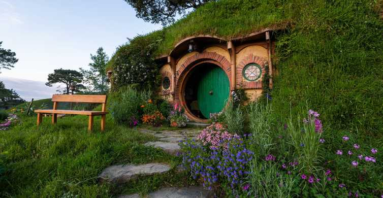
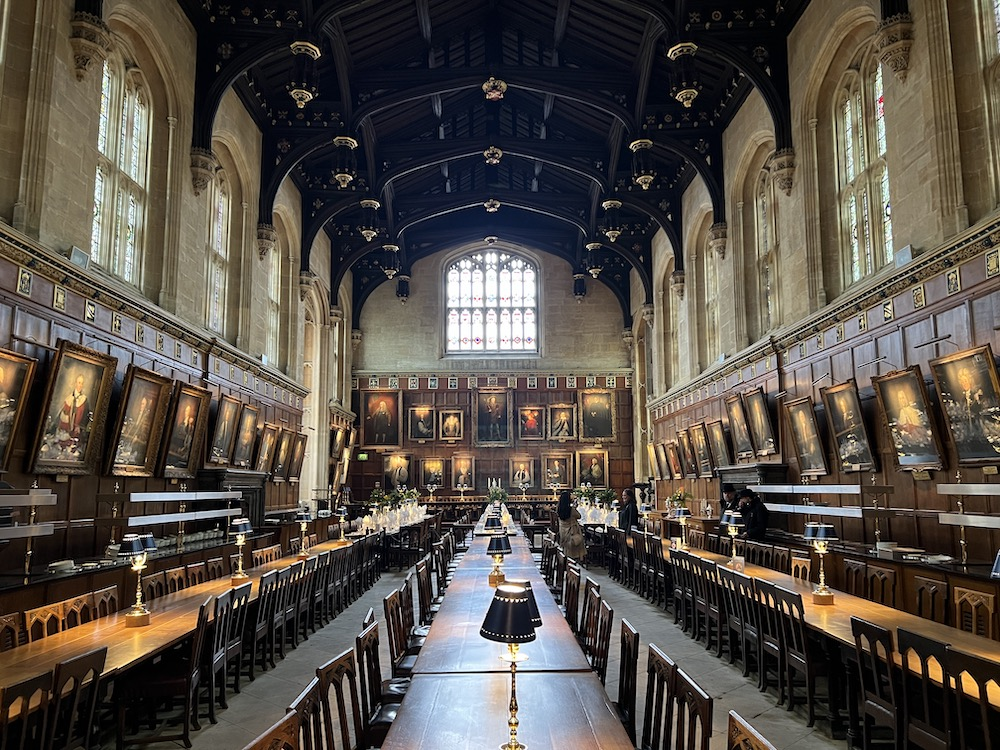
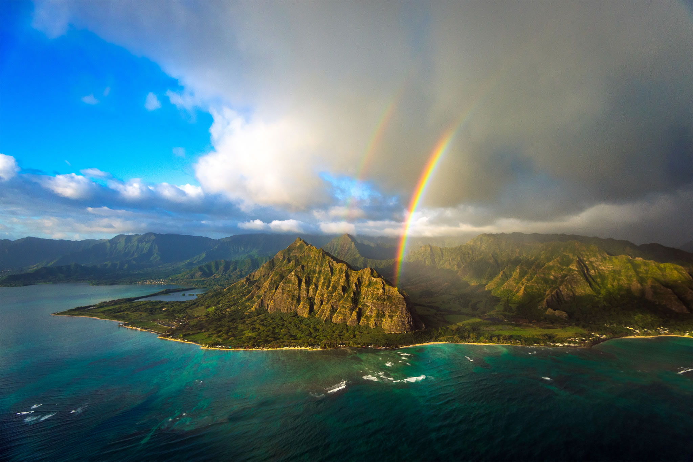
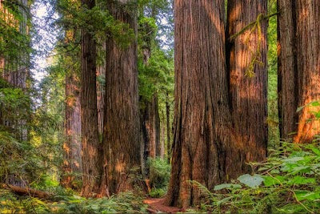

思い出に残る家族旅行におすすめ！！
撮影スポット[外国編]
目次
- ホビット
- ハリーポッター
- ジュラシックパーク
- スターウォーズ
- アベンジャーズ
1. 映画「ホビット」ロケ地
ホビット村
ニュウージーランド・マタマタ近郊の丘陵地

一つ目は、ホビット村で使われた場所です。
場所はニュージーランドのマタマタ近郊の丘陵地です。
広い敷地内には実際にホビットの家がいくつもあり、カラフルで可愛い景色が広がっています。
中つ国
ニュージーランド・ピオピオにあるマンガオタキ・ロックス
二つ目は、中つ国のロケ地です。
トロルの森とブリー郷元村の農場のロケ地に選ばれ、一行が破壊された農家にたどり着くシーン、
トロルの洞穴から出てくるシーン、ガンダルフがビルボにスティング（剣）を渡すシーン、
ラダガストの到着シーン、グンダバドのワーグやオークの攻撃シーンなど、数多くのシーンが撮影されました場所です。
樽下りの場面
ニュージーランド・ペロルス川
二つ目は、「ホビット 竜に奪われた王国」で使われた場所です。
ドワーフたちが大きな樽に隠れて川を流れていくシーンが撮影されました。
2. 映画「ハリーポッター」ロケ地
ホグワーツ城の大広間
イギリス・オックスフォード大学 クライスト・チャーチカレッジ／オックスフォード

一つ目は、ホグワーツ城の大広間で使われた場所です。
組み分け帽子が寮を決める儀式が行われました。アーチ型の天井のもとに長いテーブル、壁一面に肖像画が飾られています。
また、ここでは、映画で、宴会場としても使われていたため、たくさん撮影されています。
キングス・クロス駅
イギリス・ロンドン
二つ目は、キングス・クロス駅です。
ここは、ホグワーツに行列車に乗るための、ホームに行くときに使われた場所です。
ホグワーツに行くために、番線と10番線の壁を抜け、9と4分の3番線へ行くための場所として使われました。
ロンドンにある実在するキングス・クロス駅の9番線の近くには壁に半分めり込んだ荷物カートが設置され、
ホームに向かうハリーたちを再現できるフォトスポットになっています。
グレンフィナン高架橋
スコットランド北西部・ハイランド
三つ目は、グレンフィナン高架橋です。
ホグワーツ特急のモデルとなった、実在する機関車「ジャゴバイト号」がそうこうする場所です。
世界最古のコンクリート製の橋として知られ、100年以上前の機関車が現役で走り続けています。
3. 映画「ジュラシックパーク」のロケ地
クアロア・ランチ
アメリカ・ハワイ

一つ目は、クアロア・ランチです。
映画『ジュラシック・パーク』シリーズ、ドラマ『ロスト』などで有名なハワイを代表するロケ地です。
オアフ島の東海岸にあるこの緑の秘境は、東京ドーム450倍という広さがあります。
もっとも多くロケで使われているのが、コオラウ山脈をバックにした大平原での撮影です。
山々をバックに恐竜から逃げるシーンはここで撮影されています。
本物の恐竜はいませんが、敷地内をバスで巡る映画ツアーが組まれるほどの観光スポットです。
ハロナ・ビーチ・コーブ
アメリカ・ハワイ
二つ目は、ハロナ・ビーチ・コーブです。
オアフ島東部の入り江にあるコンパクトなビーチです。ゴツゴツした荒々しい岩場が印象的な場所です。
『パイレーツ・オブ・カリビアン』の人魚が襲ってくるシーンや
『センター・オブ・ジ・アース2 神秘の島』など、いろいろな作品のロケ地になっています。
また、この周辺は冬場にクジラの群れがやってくることも有名です
カウアイ島
アメリカ・ハワイ
三つ目は、カウアイ島です。
「太平洋のハリウッド」と呼ばれているハワイ諸島の一番北に位置する島です。
滝壺、断崖絶壁、洞窟と変化に富んだ自然を見ることができる大自然の宝庫です。
『ジュラシック・パーク』の世界観が広がるナ・パリ・コーストは、クルーズか遊覧飛行のツアーがあります。
4. 映画「スターウォーズ」のロケ地
チュニジア
チュニジア共和国
一つ目は、チュニジアです。
チュニジアは北アフリカに位置する国で、地中海とサハラ砂漠に面しています。
ここは、スターウォーズ『エピソード4/新たなる希望 』でルーク・スカイウォーカーが
初めて登場した惑星タトゥイーンの舞台になった場所です。
映画で使われた廃墟や名所を巡るツアーもあって、
ルークが育ったラーズ農場は今では｢ホテル・シディ・ドリス｣と呼ばれ、宿泊することもできます。
グリズリー・クリーク・レッドウッズ州立公園
アメリカ・カリフォルニア州

二つ目は、グリズリー・クリーク・レッドウッズ州立公園です。
ここは、スターウォーズ『エピソード6/ ジェダイの帰還』で、森の月エンドアとして使われた場所です。
多くの森のシーンが撮影されました。
シュケリッグ・ヴィヒル
アイルランド・ケリー
三つ目は、シュケリッグ・ヴィヒルです。
シュケリッグ・ヴィヒルはアイルランドのケリー州の沖合に浮かぶ島です。
『エピソード7/ フォースの覚醒』の最後でレイとチューバッカがルークを見つけ出した場所です。
映画の中では｢オク＝トー｣と呼ばれ、
『エピソード8/ 最後のジェダイ』でより大きくフィーチャーされました。
この岩だらけの島に最初のジェダイ・テンプルはないものの、
長い石段を上ると本物の古代の修道院の遺跡に行くことができます。
5. 映画「アベンジャーズ」シリーズのロケ地
グランドセントラル駅前とその周辺
アメリカ・ニューヨーク・マンハッタン
一つ目は、グランドセントラル駅前です。
ワームホールから出現したチタウリ軍団との戦闘が行なわれた場所です。
また、ここはチタウリとの激戦地としても有名です。
バールの要塞の偉容
イタリア
二つ目は、バールの要塞の偉容です。
『アベンジャーズ／エイジ・オブ・ウルトロン』のヒドラの研究施設してつかわれました。
周辺の町も架空の東欧のソコヴィアの町のロケ地となりました。
また、他の「マーベル」映画としても沢山撮影されました。
聖ジャイルズ大聖堂
スコットランド・エディンバラ
三つ目は、聖ジャイルズ大聖堂です。 『アベンジャーズ／インフィニティ・ウォー』 で使われました。 ここでは、ヴィジョンがコーヴァス・グレイヴと屋根の上で戦うシーンや 大聖堂の前メルカト・クロスの広場でワンダとプロキシマ・ミッドナイトが抗戦するシーンが撮影されています。 他にも、エディンバラの実際の街並みや歴史的建造物を使用してロケが行なわれました。